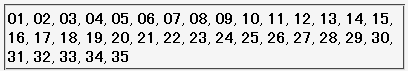
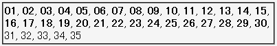

2003-04-27修正。例示の文法ミスを修正。症状の変更はありません。
1つの文書内に <link rel="stylesheet"> やstyle要素を複数置くと、始めから31個目までは認識されるが32個目以降に指定したスタイルが反映されない。
<style type="text/css"><!--.c01{font-weight:bold;}--></style>
<style type="text/css"><!--.c02{font-weight:bold;}--></style>
<style type="text/css"><!--.c03{font-weight:bold;}--></style>
……
<style type="text/css"><!--.c34{font-weight:bold;}--></style>
<style type="text/css"><!--.c35{font-weight:bold;}--></style>
<span class="c01">01</span>, <span class="c02">02</span>,
……
<span class="c34">34</span>, <span class="c35">35</span>
link要素で外部スタイルシートを1つ、その後にstyle要素で35個のスタイルシートを指定しています。
Moz1.0.2での表示（標準モード）
WinIE6.0での表示（標準モード）
<link rel="stylesheet"> やstyle要素を乱発しすぎないないようにしてください（1つの文書内に31個も置く時点で現実的ではありませんが）。WinIE6.0では標準・互換モードともに不具合の発生が確認されました。